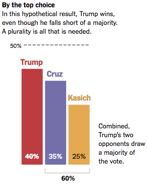
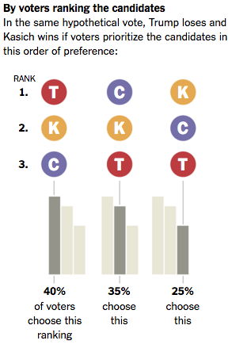
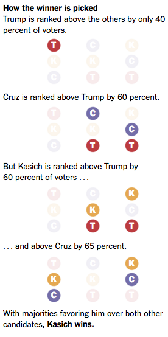

By Eric Maskin & Amartya Sen, New York Times, Thursday 28 April 2016. Read our reply.
Cambridge, Mass. – DONALD TRUMP has won Republican primaries in 23 states to date – far more than any of his opponents. Yet in the first 17 states he won, several of the other major candidates might well have beaten him in a one-on-one contest.
There is no contradiction here. In the early contests, Mr. Trump attracted less than 50 percent of the vote (in Arkansas he got only 33 percent); a majority of voters rejected him. But he faced more than one opponent every time, so that the non-Trump vote was split. That implies he could well have been defeated in most (given his extreme views on many subjects) had the opposition coalesced around one of his leading rivals. In such a scenario, he might have been out of contention long before he could ride his plurality victories toward his first outright majority win – in New York, last month.
American primaries are not the only recent elections to produce winners lacking the support of a majority of voters. In India, the Bharatiya Janata Party received only 31 percent of the vote in the last general election, but got a majority of parliamentary seats. (Even including political allies, their vote share was no more than 39 percent.) The B.J.P, a right-wing party with a Hindu ideology for which only a minority of Hindus voted, has been running the government since, which is fair enough, given the electoral system. But it has also been persecuting political dissent as "anti-national." Even majority support doesn't give leaders in a democracy a right to stifle dissent. Invoking the battle cry "anti-national" in the name of the entire nation seems especially pernicious from a government without majority support.
As with the Republicans and Mr. Trump's flirtations with fear and violence, India now suffers the ill effects of a serious confusion when a plurality win is marketed as a majority victory. The Muslim Brotherhood government of 2012 to 2013 in Egypt provides another, and similarly disturbing, example; it helped to undermine democracy in Egypt altogether.
The Marquis de Condorcet, the great 18th-century political theorist and mathematician, proposed a system for electing candidates who truly command majority support. In this system, a voter has the opportunity to rank candidates. For example, her ballot might rank John Kasich, Ted Cruz and Mr. Trump in that order, meaning that she likes Mr. Kasich best, but if he doesn't win, she would go for Mr. Cruz. She could, alternatively, choose to vote just for Mr. Kasich, which would amount to ranking Mr. Trump and Mr. Cruz in a tie for second. The winner would then be the candidate who, according to the rankings, would defeat each opponent individually in a head-to-head matchup – a real majority winner. (For simplicity, we have described a winner-take-all case; Condorcet's prescription would also be applicable in primaries where delegates are assigned proportionally.)
Under the plurality system used in American primaries and general elections, a real majority winner can be – and has been – defeated. Think, for instance, of George W. Bush, Al Gore and Ralph Nader in Florida in 2000, when Mr. Nader's candidacy drew votes that may well have decided the balance in an excruciatingly close vote. Also, a plurality winner could well be defeated by each of the other candidates in head-to-head contests (as we suggested could have been true this year for Mr. Trump).
For example, imagine a hypothetical primary in which 40 percent of voters preferred Mr. Trump to Mr. Kasich and Mr. Kasich to Mr. Cruz, while 35 percent ranked them in the order Mr. Cruz, Mr. Kasich, Mr. Trump, with the remaining 25 percent placing them in the order Mr. Kasich, Mr. Cruz, Mr. Trump. Mr. Kasich would be the real majority winner here – defeating both Mr. Trump (60 percent to 40 percent) and Mr. Cruz (65 percent to 35 percent) when the candidates are compared pairwise.
Using the current system, however, the plurality winner would be Mr. Trump – with 40 percent support. Yet he would surely be an odd choice, since he would be defeated not only by Mr. Kasich but also by Mr. Cruz (in both cases by 60 percent to 40 percent) in pairwise comparisons. Note also that Mr. Kasich, the majority winner, would come in a poor third under the current system, with only 25 percent support.
|  |  |  |
We do not claim that this prescription for majority rule is a flawless election method. Kenneth Arrow's famous "impossibility theorem" demonstrates that there is no perfect voting system, and majority rule is no exception. Specifically, as Condorcet himself noted, a majority winner might fail to exist (for example, in some circumstances, Mr. Trump could defeat Mr. Cruz and Mr. Cruz could defeat Mr. Kasich, but Mr. Kasich could defeat Mr. Trump). Such an outcome is quite unlikely in practice, but if it were to arise, a tiebreaking procedure would be needed. One attractive possibility would be a runoff between the two candidates who win the most aggregate support in the pairwise comparisons.
Replacing plurality rule with majority rule would improve American primaries. More broadly, an understanding of the critical difference between a plurality and a majority could improve politics around the world. In an open letter to Prime Minister Narendra Modi in India, Gopal Gandhi, Mahatma's grandson, wrote that "69 percent of the voters did not see you as their savior," adding that they also "disagreed on what, actually, constitutes our desh" (our country).
Eric Maskin and Amartya Sen, both Nobel laureates in economic science, are professors at Harvard.